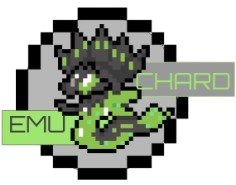

Ryujinx
Emulador experimental de próxima generación centrado en nuevas arquitecturas para una emulación eficiente.

Con links oficiales de emuladores de diferentes consolas, actualmente psp, ps2, nintendo ds, 3ds, switch, xbox clasica y 360

Emulador experimental de próxima generación centrado en nuevas arquitecturas para una emulación eficiente.
Emulador ligero orientado a una experiencia fluida y optimizada en equipos modestos y recursos limitados.
Emulador de nintendo ds enfocado en precision y baja latencia, perfecto para revivir el catalogo clasico con gran rendimiento en pc.
Emulador de psp multiplataforma, rapido y estable, con soporte para alta resolución, filtros gráficos y opciones avanzadas para usuarios exigentes.
El emulador líder de PlayStation 2, diseñado para ofrecer una alta compatibilidad y mejoras visuales en hardware moderno.
Emulador de la primera xbox con enfoque en la preservación y juego estable, ideal para explorar el catalogo clasico con una interfaz sencilla.
Emulador de Xbox 360 en desarrollo activo, orientado a pruebas y experimentación, con enfoque en compatibilidad progresiva y rendimiento en pc.
En Emu-chard reunimos enlaces a páginas oficiales y repositorios GitHub de emuladores para ayudar a preservar juegos de consolas que ya han cumplido su ciclo de ventas y soporte. Nuestro objetivo es mantener un acceso seguro y centralizado a herramientas de emulación confiables, siempre desde sus fuentes originales.
Con el tiempo iremos ampliando el archivo para cubrir más sistemas: desde PS1, PS2, PS3 y PS4 hasta consolas Nintendo más antiguas y cualquier otra plataforma que ya tenga emulador estable y aún no aparezca aquí. La idea es que Emu-chard sea un punto de referencia para encontrar emuladores actualizados y verificados.